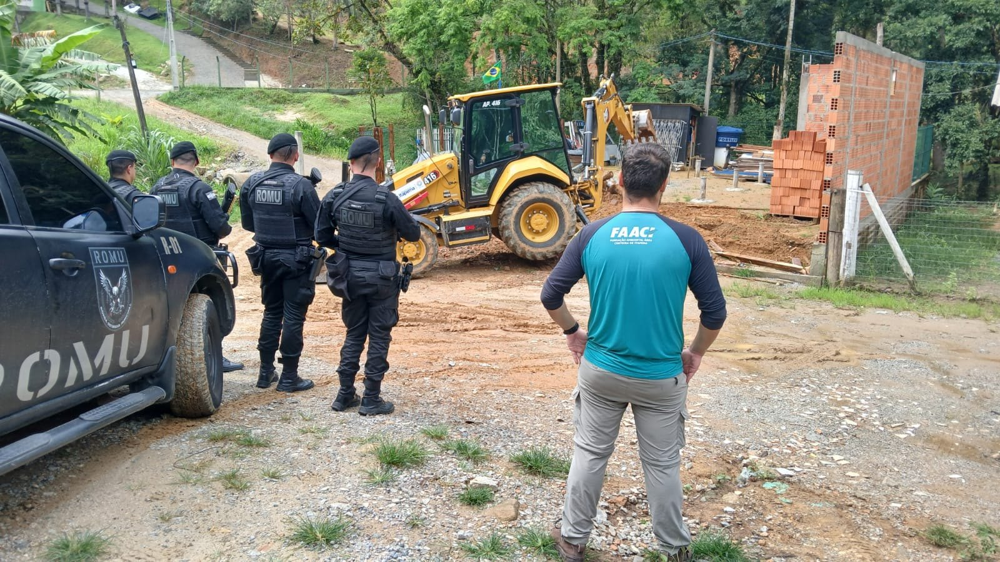

Itapema · Meio Ambiente
Itapema · Meio AmbienteObra de 10 apartamentos ou mais em Itapema passa a precisar de duas certidões da FAACI
As três instruções normativas de agosto, que abriram o pacote.
A Fundação Ambiental Área Costeira de Itapema publicou em 18 de setembro a Instrução Normativa 04, que diz como pedir autorização para construir ou mexer na vegetação dentro do Refúgio de Vida Silvestre e na zona de amortecimento dele. São nove documentos obrigatórios, protocolo só pela plataforma 1Doc e a exigência de provar que o terreno não perdeu mata nativa depois de 2008. Pela página oficial da Prefeitura, o Refúgio tem 3.204 hectares, metade do território de Itapema.
Em 30 segundos · Modo de Leitura, formato original Santa Informa
Itapema tem uma área protegida grande.
É o Refúgio de Vida Silvestre.
São 3.204 hectares, metade da cidade.
Fica no morro, no lado de dentro.
Lá nascem os rios que dão água à região.
Construir ali sempre foi restrito.
Faltava dizer como se pede.
Agora tem regra escrita.
É a Instrução Normativa 04 da FAACI.
Assinada em 17 de setembro.
Publicada no Diário em 18 de setembro.
Já está valendo.
Vale para casa, prédio e comércio.
Vale também na zona de amortecimento.
E para tirar pinus e eucalipto.
O pedido entra só pelo 1Doc.
Tem nove documentos na lista.
Entre eles, planta com coordenada.
E foto atual da área.
E matrícula com até 90 dias.
Tem uma exigência que pega gente.
Provar que não houve corte de mata.
De 2008 para cá.
Quem manda no fim é o gestor da unidade.
Se ele for contra, o pedido cai.
Negou? Cabe recurso.
São 20 dias úteis para recorrer.
A norma não diz o preço da taxa.
Nem em quantos dias a FAACI responde.
Meio AmbientePublicada em Redação Santa Informa

A presidente da FAACI, Luciana Saramento, assinou em 17 de setembro a Instrução Normativa 04, publicada no dia seguinte no Diário Oficial dos Municípios, na edição 5246. São 15 artigos e três anexos, e a norma entrou em vigor na data da publicação. Ela regulamenta a Lei Municipal 5.116/2026, que criou a Autorização para Atividades em Unidades de Conservação e mandou o órgão ambiental detalhar o caminho por instrução normativa.
O artigo 3º lista cinco situações: edificação residencial unifamiliar, edificação multifamiliar transitória, edificação não residencial, edificação mista e extração de espécies exóticas invasoras, em especial pinus e eucalipto. A regra vale dentro da unidade de conservação e também na zona de amortecimento, que é a faixa do entorno. Quem toca obra ou atividade que já depende de licenciamento ambiental não precisa dessa autorização, e sim da licença, como diz o artigo 4º.
O artigo 8º pede nove documentos de todo mundo, mais a cláusula que permite à FAACI exigir outros. Na lista estão o requerimento do Anexo I, imagem de satélite com o perímetro da intervenção, planta georreferenciada, descrição da atividade com ART do responsável técnico, fotografias coloridas e atuais e a matrícula do imóvel com no máximo 90 dias. Quem não é dono precisa comprovar posse de mais de dez anos. Dentro da descrição técnica vai a parte mais dura: comprovar, por análise do local ao longo do tempo, que não houve supressão de vegetação nativa depois de 2008. Empresa junta mais três papéis. Obra ainda precisa do projeto de tratamento de esgoto com memorial de cálculo, na NBR 17.076/2024, contando quatro pessoas por dormitório. O protocolo é exclusivamente pela plataforma 1Doc, e o pedido só conta como protocolado quando a lista estiver completa.
Não é só a análise técnica da fundação. O artigo 12 manda consultar o gestor da unidade de conservação, que precisa atestar se a atividade combina com o Plano de Manejo e com o zoneamento. Manifestação desfavorável do gestor significa pedido indeferido. A FAACI pode fazer vistoria antes de decidir, e de negativa cabe recurso ao presidente da fundação em 20 dias úteis.
O Refúgio de Vida Silvestre foi criado pelo Decreto 87, de 2012, e a página oficial da Prefeitura diz que ele cobre 3.204 hectares, metade da área do município. Ali nascem os rios Perequê, Areal, São Paulinho e Ilhota, que abastecem Itapema, Porto Belo, Bombinhas e parte de Balneário Camboriú. Não é mata longe de gente: em 30 de janeiro deste ano a fundação derrubou, com a Guarda Municipal, uma construção irregular dentro da unidade. A IN 04 é a quarta peça do pacote ambiental que a FAACI vem publicando, depois das três de 20 de agosto que contamos em 6 de setembro.
O resumo de 30 segundos está no topo e a versão completa é o texto acima. Aqui ficam as três leituras da casa sobre o mesmo assunto.
Clara, a otimista
Regra escrita é boa notícia para os dois lados. Antes, quem tinha um terreno lá em cima e queria fazer alguma coisa dependia de descobrir o caminho conversando. Agora tem artigo, tem anexo, tem lista de documento e tem prazo de recurso. Quem cumpre sabe o que cumprir, e quem analisa tem em que se apoiar.
E tem o lado da mata. Metade de Itapema está dentro dessa área, e é de lá que sai a água que chega em quatro cidades. Colocar a exigência de provar que o terreno não perdeu vegetação nativa depois de 2008 é um jeito direto de proteger quem respeitou a regra e cobrar de quem não respeitou.
Seu Prudêncio, o criterioso
Merece atenção a lista do artigo 8º. Imagem de satélite, planta georreferenciada, ART, análise de vegetação ao longo do tempo e projeto de esgoto com memorial de cálculo não são papéis que o proprietário junta sozinho numa tarde. Isso significa contratar profissional habilitado antes mesmo de saber se o pedido tem chance. E a norma não diz quanto custa a taxa nem em quantos dias a fundação responde, que é justamente o que dimensiona o esforço.
Vale acompanhar também a referência à Instrução Normativa 06. O texto manda seguir essa norma para extração de pinus e eucalipto, e ela não aparece no Diário Oficial. Citar ato que o cidadão não consegue abrir é o tipo de detalhe que trava processo no balcão.
Uma sugestão útil: publicar junto uma consulta de endereço, mesmo simples, dizendo se o lote está dentro da unidade ou da zona de amortecimento. Dito isso, a instrução é bem feita. Separa documentação comum de específica, dá anexo pronto para requerimento, declaração e procuração, fixa prazo de recurso e deixa explícito que o gestor da unidade precisa se manifestar. É bem mais organização do que havia até 17 de setembro.
Caco, o sarcástico
Chegou o manual de como construir no meio do mato em Itapema. Spoiler: dá trabalho. São nove documentos, e um deles pede prova de que o terreno está do mesmo jeito desde 2008. Tem gente que não acha a conta de luz do mês passado.
Meu artigo favorito é o que manda seguir a Instrução Normativa 06. Fui atrás dela no Diário Oficial e encontrei a 01, a 02, a 03 e a 04. A 06 deve estar fazendo trilha.
Agora sem ironia: é bom ter regra no papel. Metade da cidade fica dentro dessa área, e a água de quatro municípios começa ali. Que a taxa e o prazo apareçam logo, porque regra sem preço e sem prazo vira fila.
Fontes: os artigos 1º a 15, os três anexos, a data de assinatura em 17 de setembro de 2026 e a entrada em vigor na publicação estão na Instrução Normativa FAACI nº 04, publicada em 18 de setembro de 2026 no Diário Oficial dos Municípios de Santa Catarina, edição 5246. A exclusão de imóvel em unidade de conservação da consulta de viabilidade ambiental está na Instrução Normativa FAACI nº 01, e as outras duas normas do pacote são a Instrução Normativa nº 02 e a Instrução Normativa nº 03, as três de 20 de agosto de 2026. A contagem de quantas instruções normativas da FAACI estão publicadas foi feita por nós em 20 de setembro de 2026 na busca do Diário Oficial dos Municípios, pelo termo exato Instrução Normativa FAACI. Os 3.204 hectares, a criação pelo Decreto 87 de 2012, as nascentes dos rios Perequê, Areal, São Paulinho e Ilhota, o abastecimento de Itapema, Porto Belo, Bombinhas e parte de Balneário Camboriú e os arquivos de limite, zoneamento e Plano de Manejo estão na página Unidade de Conservação, da FAACI, no site da Prefeitura de Itapema. A demolição de 30 de janeiro de 2026 e a foto de topo estão na notícia FAACI realiza demolição de construção irregular em área de preservação no Refúgio de Vida Silvestre de Itapema, publicada pela Prefeitura de Itapema.
Itapema · Meio AmbienteAs três instruções normativas de agosto, que abriram o pacote.
 Itapema · Meio Ambiente
Itapema · Meio AmbienteOnde a fundação apresentou o novo fluxo aos profissionais.
 Itapema · Meio Ambiente
Itapema · Meio AmbienteA mesma área protegida, vista por dentro da trilha.